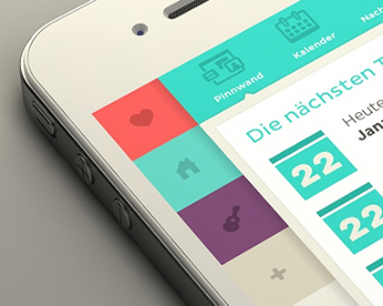

Photography And Image Collection
I have a deep passion for photography, capturing moments that tell meaningful stories.
My interest lies in both nature and urban photography, where I explore light, texture, and emotion through the lens.
I enjoy curating unique image collections ....

Vector Art
I am passionate about creating vector art, which allows me to produce clean, scalable graphics with precision.
I enjoy designing illustrations, logos, and icons using tools like Adobe Illustrator.
Vector art gives me the flexibility to experiment with shapes, colors, and geometric designs.

Programing
I enjoy programming as a creative and logical way to solve real-world problems.
Writing code allows me to build applications, automate tasks, and explore new technologies.
I often spend my free time learning new programming languages and experimenting with personal projects.